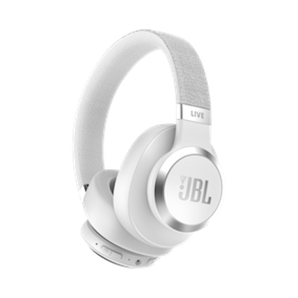
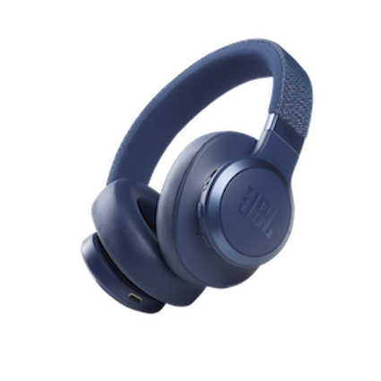

Protégez-vous du bruit et immergez-vous dans votre musique grâce à la Réduction de Bruit Adaptative. La technologie Ambient Aware augmente les bruits environnants pour plus de sécurité, tandis que TalkThru réduit le volume de la musique et amplifie les voix, vous permettant ainsi de discuter en gardant votre casque.

Obtenez de l’aide en utilisant votre voix.Obtenez l’aide de votre assistant vocal favori (*) avec votre voix ou en touchant l’oreillette. Activez les fonctions RBA ou Ambient Aware, vérifiez votre niveau de batterie ou éteignez votre JBL Live 660NC grâce à Ok Google. Configurez vos assistants vocaux favoris en toute simplicité avec la nouvelle application JBL. (*) Uniquement pris en charge sur Android. (**) Android 6.0 ou supérieur est requis pour un accès complet aux fonctionnalités Alexa lors de l’utilisation de cet appareil.Des fonctionnalités puissantes.Mains libres et appels stéréo parfaitsJusqu'à 50 hueres d'autonomie + Recharge rapideArceau en tissu confortable et étui de transportLecture et pause automatiqueFast Pair avec GoogleTélécharge l'application pour plus d'options !